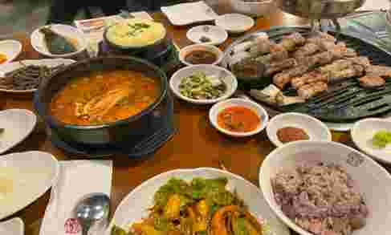
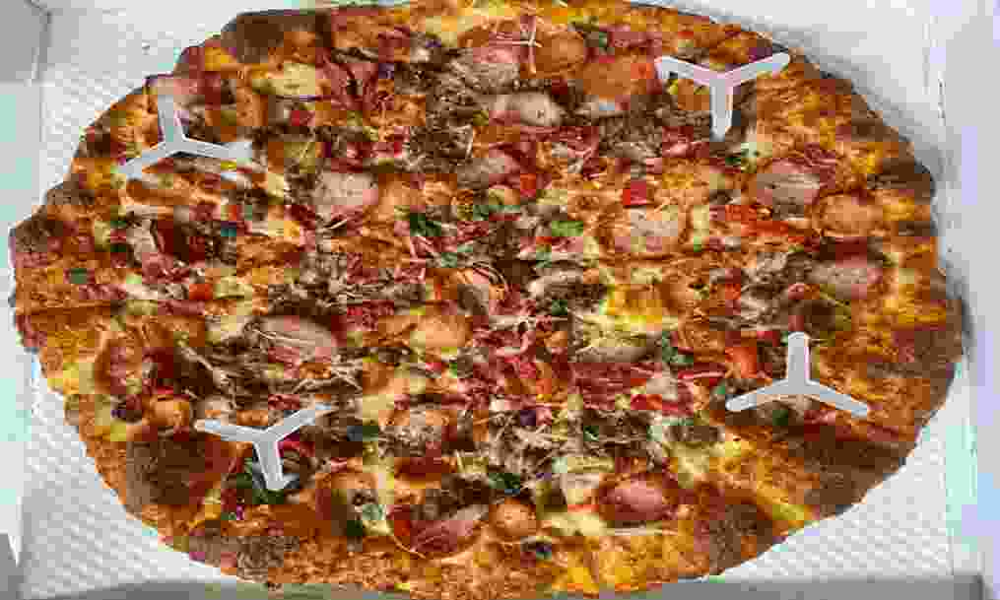

맛집 탐방
맛이 특이하고 낯선 식당, 유명한 식당을 찾아다니는 것보다 평범하고 내가 자주 다닐 수 있는 곳, 어느 누구에게나 약속 장소로 추천해도 될만한 무난한 식당들을 찾으러 다니는 취미가 있다.

고반 식당
매장의 숙성고에서 자체 숙성을 하여 맛있는 삼겹살을 즐길 수 있다. 다양한 소스들에 고기를 찍어먹는 재미도 있었다.

화수목
일반 샤브샤브 메뉴와 전골 스타일의 관동식 스키야키, 소스에 고기, 야채를 적셔 구워 먹는 관서식 스키야키 메뉴가 있다. 대중적이고 건강한 맛으로 단체로 방문하기에 좋다.

잭슨 피자
짜고 매운 음식은 좋아하지만 느끼한 음식은 잘 못먹어서 피자를 좋아하지는 않는데 여기 피자는 도우가 담백하고 맛있어서 좋았다. 카카오맵의 잭슨피자 판교점 페이지에 카카오 대표이사님의 리뷰가 달려 있는 것이 인상적이었다.